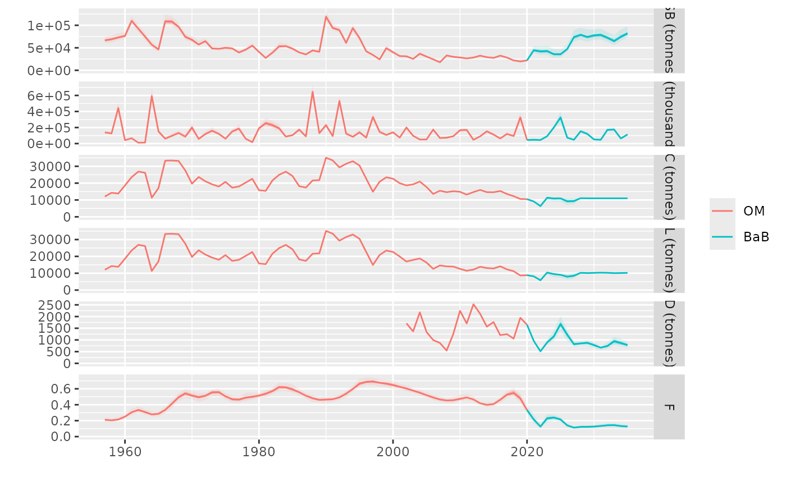

Banking and Borrowing Mechanism for TAC Adjustment
bank_borrow.is(
stk,
ctrl,
args,
split = NULL,
rate = NULL,
diff = 0.15,
healthy = 1,
tracking
)FLStock object representing the stock dat.
fwdControl object for forward projection controls.
List of additional arguments required for the execution.
Optional. Input for splitting controls (default is NULL).
Numeric. Proportion rate for borrowing and banking adjustments (default is NULL).
Numeric. Tolerance difference for determining borrowing or banking actions (default is 0.15).
Numeric. Threshold for determining stock health (default is 3).
Data structure. Object to track borrowing and banking values over time.
A list containing:
Modified fwdControl object with updated TAC values.
Updated tracking data structure with recorded borrowing and banking amounts.
The function performs the following:
Checks if management assumes annual (frq = 1). Raises an error if not.
Retrieves and adjusts TAC for previous banking and borrowing actions.
Verifies the stock's health status (healthy) using tracking data to determine eligibility for banking/borrowing.
Calculates borrowing if TAC is significantly lower than the reference (pre) and banking if TAC is significantly higher.
Updates the ctrl and tracking objects with the adjusted TAC and banking/borrowing amounts.
Banking and borrowing adjustments are applied only when the frequency (frq) is equal to 1.
# Example dataset
data(sol274)
#> Warning: namespace ‘colorspace’ is not available and has been replaced
#> by .GlobalEnv when processing object ‘om’
#> Warning: namespace ‘dplyr’ is not available and has been replaced
#> by .GlobalEnv when processing object ‘om’
#> Warning: namespace ‘TMB’ is not available and has been replaced
#> by .GlobalEnv when processing object ‘om’
#> Warning: namespace ‘remotes’ is not available and has been replaced
#> by .GlobalEnv when processing object ‘om’
#> Warning: namespace ‘crayon’ is not available and has been replaced
#> by .GlobalEnv when processing object ‘om’
#> Warning: namespace ‘shiny’ is not available and has been replaced
#> by .GlobalEnv when processing object ‘om’
#> Warning: namespace ‘htmlwidgets’ is not available and has been replaced
#> by .GlobalEnv when processing object ‘om’
#> Warning: namespace ‘xtable’ is not available and has been replaced
#> by .GlobalEnv when processing object ‘om’
#> Warning: namespace ‘FLAssess’ is not available and has been replaced
#> by .GlobalEnv when processing object ‘om’
#> Warning: namespace ‘FLSRTMB’ is not available and has been replaced
#> by .GlobalEnv when processing object ‘om’
# Sets up an mpCtrl using hockeystick(catch~ssb) + bank_borrow(10%)
ctrl <- mpCtrl(est = mseCtrl(method=perfect.sa),
hcr = mseCtrl(method=hockeystick.hcr, args=list(metric="ssb", trigger=42000,
output="catch", target=11000)),
isys = mseCtrl(method=bank_borrow.is, args=list(rate=0.10, healthy=2, diff=0.05)))
# Runs the MP
run <- mp(om, control=ctrl, args=list(iy=2021, fy=2035))
#> 2021 - 2022 - 2023 - 2024 - 2025 - 2026 - 2027 - 2028 - 2029 - 2030 - 2031 - 2032 - 2033 - 2034 -
# Plot time series
plot(om, list(BaB=run))
#> Warning: Removed 4500 rows containing non-finite outside the scale range
#> (`stat_fl_quantiles()`).
#> Warning: Removed 4500 rows containing non-finite outside the scale range
#> (`stat_fl_quantiles()`).
#> Warning: Removed 4500 rows containing non-finite outside the scale range
#> (`stat_fl_quantiles()`).

# Observe from tracking the TAC-setting steps
items <- c("year", "hcr", "banking.isys", "borrowing.isys", "isys", "fwd")
dcast(tracking(run)[metric %in% items[-1], .(data=mean(data)), by=.(year, metric)],
year~metric, value.var='data')[, ..items]
#> Key: <year>
#> year hcr banking.isys borrowing.isys isys fwd
#> <char> <num> <num> <num> <num> <num>
#> 1: 2021 5813.073 0 581.3073 6394.381 6394.381
#> 2: 2022 10733.635 0 841.3816 10993.709 10993.709
#> 3: 2023 10344.320 0 775.1627 10278.101 10278.101
#> 4: 2024 10404.831 0 784.8574 10414.526 10414.526
#> 5: 2025 9271.891 0 693.4574 9180.491 9180.491
#> 6: 2026 9281.223 0 703.9527 9291.718 9291.718
#> 7: 2027 10928.491 0 836.9265 11061.464 11061.464
#> 8: 2028 11000.000 0 829.3074 10992.381 10992.381
#> 9: 2029 11000.000 0 830.0693 11000.762 11000.762
#> 10: 2030 11000.000 0 829.9931 10999.924 10999.924
#> 11: 2031 11000.000 0 830.0007 11000.008 11000.008
#> 12: 2032 11000.000 0 829.9999 10999.999 10999.999
#> 13: 2033 11000.000 0 830.0000 11000.000 11000.000
#> 14: 2034 11000.000 0 830.0000 11000.000 11000.000